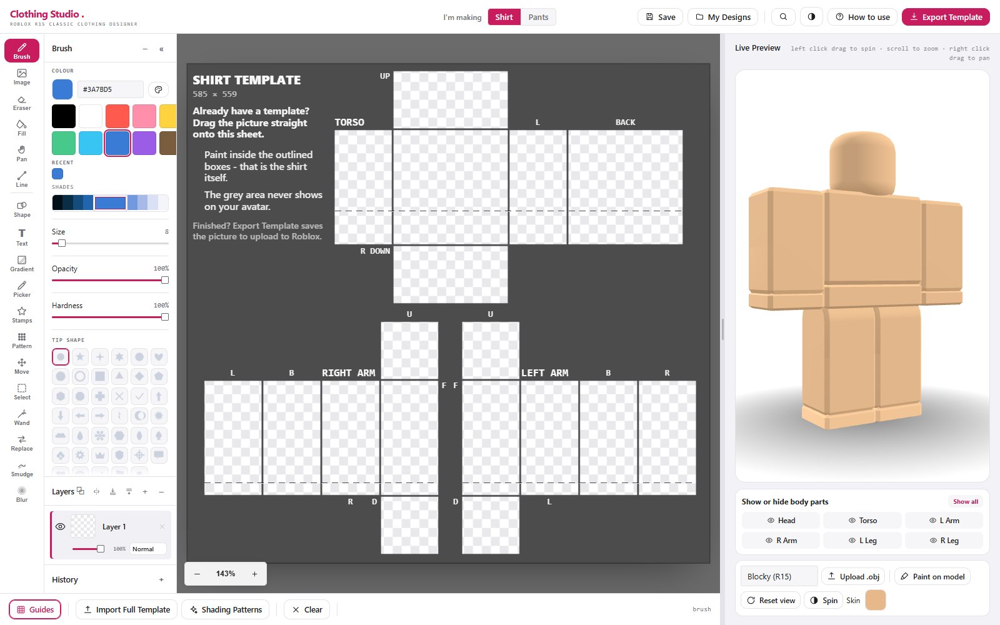

Roblox Classic Clothing Previewer & Designer
Free Roblox Clothing Preview & Template Maker
Design Roblox shirts and pants in a layered, Photoshop-style painter, or import a template you already have, and see it live on a 3D avatar. Test your clothing before you spend a single Robux uploading it.
No download · No sign-up · Runs in your browser

Clothing Studio at a glance
The short version, if you just want the facts.
- What it is
- A free online editor for Roblox Classic clothing: shirts and pants.
- Template size
- 585 × 559 pixels, exported as a PNG at native size.
- Price
- Free, with no account, no watermark and no ads.
- Install
- None. It runs in the browser, and can be added to a home screen.
- 3D preview
- Live R15 mannequin, four body types, or upload your own
.obj. - Works on
- Windows, Mac, Chromebook, Android and iOS browsers.
- Avatar types
- The same template covers both R6 and R15.
- Your files
- Saved in your own browser. Nothing is uploaded to a server.
- Preview only?
- Yes. Import an existing template and view it on the avatar without drawing anything.
- Test before upload
- Check seams and placement on the 3D model before paying Roblox's upload fee.
Everything you need to design Roblox clothes
A full clothing studio in your browser, built for Roblox Classic shirt and pants templates.
Live 3D preview
A real-time R15 mannequin shows exactly how your design wraps around the avatar as you paint. Spin it, reset the view, switch body types, or paint straight onto the model.
Layers & blend modes
Work like a pro with a full layer stack, opacity, blend modes, and unlimited undo/redo, for non-destructive editing for shirts and pants.
Powerful tools
Brush, line, fill, eraser, text, stamps, gradients, patterns, smudge, blur, colour replace, image import and a selection tool with copy, cut and paste.
Fabric shading
One-click fabric shading templates add realistic folds, drape and texture so your clothing looks hand-finished instead of flat.
Shirts & pants
Switch between Roblox Classic shirt and pants templates, each with its own layers, on the correct 585×559 UV layout with the gutters masked off.
Export & upload
Export a clean PNG template ready to upload to Roblox, and save your projects in the browser to keep editing later.
Preview and test your clothing before you upload
You do not have to design anything. Clothing Studio works as a plain Roblox clothing previewer too.
Roblox will not show you a Classic shirt on an avatar until you have paid to upload it, and Roblox Studio needs an asset ID for the same reason, so the normal way to test a design costs Robux every single attempt. That is the problem this tool was built around.
Already have a template? Use Import Full Template to drop your finished 585 × 559 PNG straight in, and it appears on the mannequin immediately. From there it is a 3D shirt viewer: rotate the avatar, switch body types, and see the flat 2D rectangles wrapped exactly the way Roblox will wrap them.
- A clothing tester that costs nothing. Check a shirt or pants design as many times as you like without spending Robux, and only upload once you are happy with it.
- Works for R6 and R15. Classic clothing shares one template across both, so what the R15 mannequin shows you is what either body type will wear.
- A 2D to 3D visualizer. The template is a flattened UV map, not a picture of a shirt. Seeing it on a body is the only reliable way to tell that a logo landed on the back or a sleeve went on upside-down.
- Preview someone else's template. Bought or downloaded a template and want to know what it actually looks like? Import it and spin it round before you commit.
- Your own body model. Four mannequins are built in, and you can upload a custom
.objif you want to check the fit on a specific rig.
How to make a Roblox shirt
No experience needed. Most people finish their first outfit in under ten minutes.
-
Open the editor
Launch Clothing Studio and pick the shirt or pants template. There is nothing to download, and no account to make.
-
Block in a base colour
Use the fill tool to set the colour of the whole garment first, then add a new layer for detail so the base stays editable underneath.
-
Add your design
Paint with the brush, add text or a logo, import an image, or drop in a gradient or pattern. Give each element its own layer so you can move it later.
-
Check it in 3D
Rotate the live avatar to check seams and placement. Anything that crosses between two template faces is easiest to fix here.
-
Add fabric shading
Apply a shading template for folds and depth, then dial its layer opacity down until it looks natural rather than painted on.
-
Export and upload
Export the PNG and upload it to Roblox as Classic Clothing from the Roblox Creator Hub.
The Roblox clothing template, explained
If you have ever wondered why Roblox templates look like a scattered pile of rectangles, this is why.
A Roblox Classic shirt or pants template is a single 585 × 559 pixel image. It is not a picture of a shirt. It is a flattened UV map: the avatar's body parts unwrapped into boxes and laid flat, so every rectangle is one face of one body part.
A shirt unwraps three boxes: the torso and both arms. Pants unwrap the hips and both legs. Each box contributes six faces, which is why there are 18 paintable rectangles on a template. Roblox wraps the image back around the avatar at upload time, so artwork that spans two rectangles has to line up at the shared edge or it will show a visible seam.
| Part of the template | What it covers |
|---|---|
| Canvas size | 585 × 559 pixels, PNG, transparency supported |
| Torso box (shirt) | Chest, back, both sides, shoulders and the underside: 6 faces |
| Arm boxes (shirt) | Left and right sleeves, 6 faces each |
| Hip box (pants) | The waist and seat section above the legs: 6 faces |
| Leg boxes (pants) | Left and right legs, 6 faces each |
| Gutters | The gaps between rectangles. Roblox ignores them, so nothing painted there appears on the avatar |
Because the preview here is a real 3-D model using the same UV layout, what you see on the mannequin is what Roblox will render, which is the fastest way to catch a sleeve that is upside-down or a logo that lands on the avatar's back.
Tips for better-looking Roblox clothing
Small things that separate a first attempt from something people actually wear.
- Work at native size. Design and export at 585 × 559 and never rescale the PNG afterwards. Almost every "why is my shirt blurry" problem is a resize.
- Use layers for anything you might move. A logo on its own layer takes two seconds to reposition; a logo painted into the base colour means starting over.
- Mind the seams. Stripes and patterns that cross from the torso onto an arm need to meet at the boundary. Rotate the 3D preview before you commit.
- Shading last, opacity low. Add a fabric shading layer on top of the finished design and pull the opacity back. Heavy shading reads as dirt rather than fabric.
- Symmetry mode for anything paired. Sleeves, pockets and trims stay identical without painting each side twice.
- Import a reference. You can bring an image in as a layer, trace over it, and delete it before exporting.
Why Clothing Studio?
Most Roblox clothing tools are either paid, desktop-only, or flat 2D editors with no way to see the result. Clothing Studio is the rare one that is free, fully online, layered, and shows a live 3D preview, with built-in fabric shading. Nothing to buy, nothing to install, and your work never leaves your browser.
Frequently asked questions
About the editor, the template format, and getting your design into Roblox.
Is Clothing Studio free?
Yes. It is 100% free and runs entirely in your browser. There is no sign-up, no download, and no watermark on the template you export.
Do I need to download or install anything?
No. It works in any modern browser (Chrome, Edge, Firefox, Safari). Just open the editor and start designing.
Can I make both Roblox shirts and pants?
Yes. Switch between the Roblox Classic shirt template and the pants template, each with its own layer stack.
What size is a Roblox clothing template?
Roblox Classic shirt and pants templates are 585 × 559 pixels. Clothing Studio works at exactly that size and exports a PNG at those dimensions, so nothing is rescaled on the way to Roblox.
Can I preview my clothing on a 3D avatar?
Yes. A live 3D R15 mannequin updates as you paint, so you see exactly how the design wraps around the body. Several body types are included, and you can paint directly onto the model.
Can I preview a shirt template I already have?
Yes. Use Import Full Template to load an existing 585 × 559 PNG and it appears on the 3D avatar straight away. You do not have to draw anything, so Clothing Studio works as a plain Roblox clothing viewer if all you want is to check a template someone sent you, or one you made in another program.
How can I test a Roblox shirt without uploading it?
Preview it here first. Roblox only shows a Classic shirt on an avatar once you have paid to upload it, and Roblox Studio needs an asset ID for the same reason, so the usual way to test a design costs Robux every attempt. Clothing Studio maps your template onto a real 3D R15 mannequin using the same UV layout Roblox uses, so you can rotate it, check the seams and catch an upside-down sleeve before you spend anything.
How do I upload my design to Roblox?
Export the PNG from Clothing Studio, then upload it as Classic Clothing from the Roblox Creator Hub. Roblox charges its own upload fee in Robux and sets its own moderation and selling requirements, so check the current rules there before you upload.
Does it work on a phone, tablet or Chromebook?
Yes. It runs in the browser on phones, tablets and Chromebooks as well as on Windows and Mac. A bigger screen or a stylus makes fine detail easier, and you can minimise the panels to free up room.
Why does my shirt look blurry or stretched in Roblox?
That almost always means the image was resized somewhere. Design and export at the native 585 × 559 size, do not scale the PNG afterwards, and use the 3D preview to catch artwork running across a seam between two template faces.
Does this work for R6 and R15 avatars?
Yes. Classic shirts and pants use the same template for both body types, so a design made here works on R6 and R15. The preview mannequin is R15.
Are my designs saved if I close the tab?
Your work is stored in your own browser, and you can save named projects and reopen them later. Nothing is uploaded to a server, so clearing your browser data or switching browser or device will not carry your designs with you. Export a PNG for anything you want to keep permanently.
What is the difference between Classic Clothing and UGC or layered clothing?
Classic Clothing (shirts, pants and t-shirts) is a flat 585 × 559 image painted onto the avatar's existing body, and that is what Clothing Studio makes. Layered (UGC) clothing is a separate system: real 3D garments modelled in software such as Blender, rigged and fitted so they sit on top of the body. If you want to design clothing by drawing rather than by 3D modelling, Classic Clothing is the one you want, and it still works on every avatar.
Can I use this instead of Photoshop, GIMP or Paint.NET?
Yes, and it is usually easier for this specific job. General image editors do not know the Roblox template, so you have to find the UV layout yourself, guess where the seams fall, and re-upload to Roblox every time you want to see the result. Clothing Studio starts from the correct 585 × 559 layout with the gutters masked off, and shows the wrapped result on a 3D avatar as you paint, while still giving you layers, blend modes and undo.
How much does it cost to upload clothing to Roblox?
Clothing Studio is free, but Roblox charges its own fee in Robux to publish a Classic Clothing item, and selling clothing has additional requirements on their side. Those numbers and rules are set by Roblox and change from time to time, so check the current terms on the Roblox Creator Hub before you upload.
Why was my shirt rejected by Roblox moderation?
Roblox reviews every uploaded item against its community standards, and rejections are usually about the artwork itself: copyrighted logos or characters, real-world brands, text, or anything suggestive or violent. Original artwork with no text and no borrowed logos passes most reliably. Moderation is entirely Roblox's decision; nothing in this editor affects it.
Can I make a hoodie, jacket or suit?
Yes, as a Classic shirt. You are painting the illusion of a garment onto the avatar's torso and arms, so a hoodie is drawn: sleeves and body in the fabric colour, then a drawstring, a pocket outline and a hood shape at the neckline. The fabric shading templates do most of the heavy lifting for folds and depth, and the 3D preview is what tells you whether the seams line up.
Can I make a dress?
Yes, as a Classic shirt and pants pair. A dress is drawn as a bodice on the shirt template and a skirt on the upper legs of the pants template, with the two meeting at the waist. Design both in the same session, switch between them with the garment selector, and use the 3D preview to line the waistline up so the join does not show.
Does Clothing Studio work offline?
Partly. You can install it to your home screen or desktop, and your saved designs live in the browser, but the 3D preview loads its graphics library from the internet, so a first load needs a connection. Treat it as an online tool.